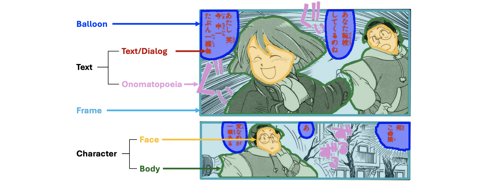
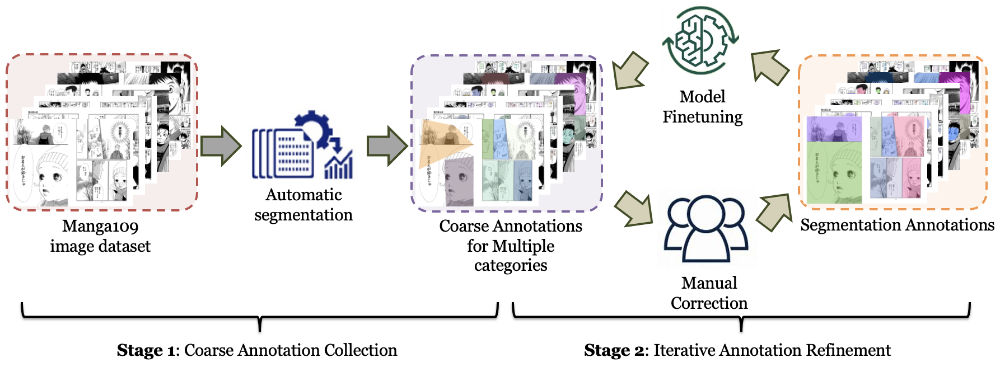
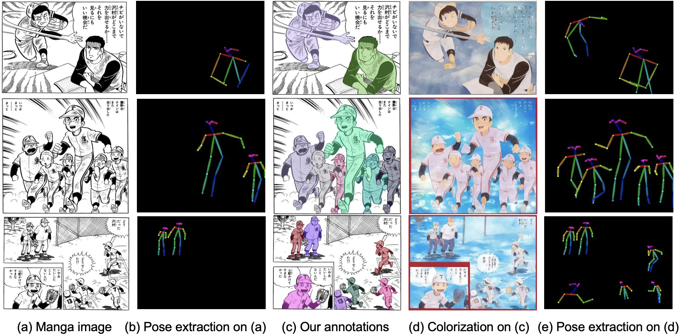

Manga, a popular form of multimodal artwork, has traditionally been overlooked in deep learning advancements due to the absence of a robust dataset and comprehensive annotation. Manga segmentation is the key to the digital migration of manga. There exists a significant domain gap between the manga and the natural images, that fails most existing learning-based methods. To address this gap, we introduce an augmented segmentation annotation for the Manga109 dataset, a collection of 109 manga volumes, that offers intricate artworks in a rich variety of styles. We introduce a detailed annotation that extends beyond the original simple bounding boxes to the segmentation masks with pixel-level precision. It provides object category, location, and instance information that can be used for semantic segmentation and instance segmentation. We also provide a comprehensive analysis of our annotation dataset from various aspects. We further measure the improvement of the state-of-the-art segmentation model after training it with our augmented dataset. The benefits of this augmented dataset are profound, with the potential to significantly enhance manga analysis algorithms and catalyze the novel development in digital art processing and cultural analytics.
We define six object categories: frame, text/dialog, onomatopoeia, character body, character face, and balloon.
We first collected coarse segmentation annotations through existing methods and then refined them through iterative annotations with manual correction and automatic refinement.

Our pipeline and instance segmentation can also facilitate other applications, such as manga pose extraction.
@inproceedings{xie2025advancing,
title={Advancing Manga Analysis: Comprehensive Segmentation Annotations for the Manga109 Dataset},
author={Minshan Xie, Jian Lin, Hanyuan Liu, Chengze Li, and Tien-Tsin Wong},
booktitle={Proceedings of the IEEE/CVF Conference on Computer Vision and Pattern Recognition},
year={2025},
}We sincerely thank the Aizawa Yamakata Matsui Lab and the authors involved in the development of the Manga109 dataset that was essential to our research.